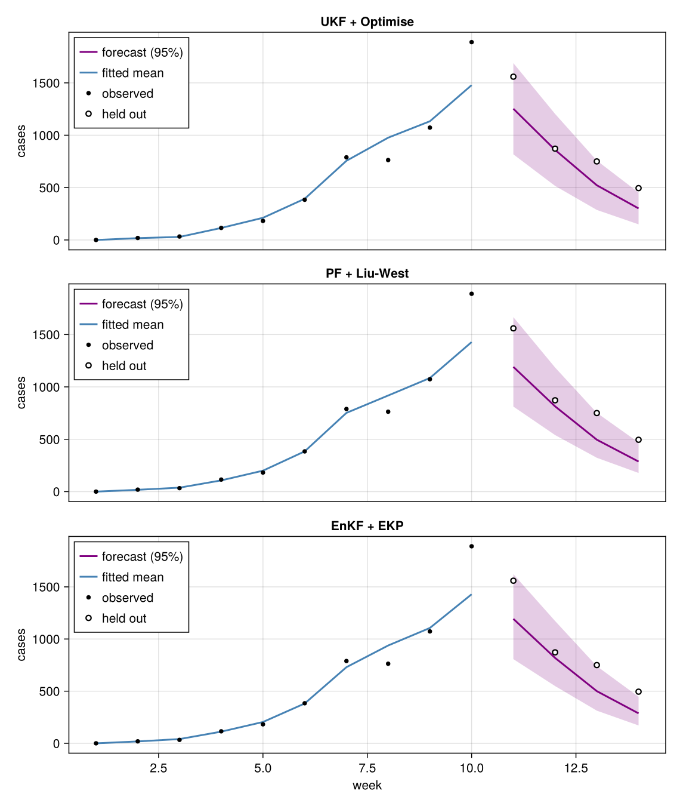

Inference engines¶
ConfigurableEpi fits a model to a count series and forecasts ahead through one contract: describe the model once as an EpiModel, build an engine with build_inference(filter, hyper, model; ...), and drive it with fit_forecast!.
Three pairings of a state filter and a method for the static hyperparameters are available:
| Filter | Hyperparameters | Engine |
|---|---|---|
UKF() |
Optimise() |
unscented Kalman filter; hyperparameters maximise the marginal log-posterior |
PF(n_particles) |
LiuWest() |
bootstrap particle filter; hyperparameters learned online in the particle cloud |
EnKF(n_ensemble) |
EKP(...) |
ensemble Kalman filter; hyperparameters by outer ensemble Kalman inversion |
This example simulates weekly counts from a seasonal SEIRS model, fits the three engines to the same data and compares their forecasts.
using ConfigurableEpi
using AlgebraicEpiMech
using Catlab: dom
using CairoMakie
using DataFrames, LinearAlgebra, Distributions
using LowLevelParticleFilters: AdvancedParticleFilter, simulate
import Logging, Random
Random.seed!(11)
The model¶
An SEIRS model observed through a two-stage chain on the incidence of infection (AtEvent(:transmission)), with a latent AR(1) modifier Rt on transmission.
N = 1.0e5
pn = attach_observation(dom(create_model(OnePopulationTyping(), SEIRS())), AtEvent(:transmission); n_stages = 2)
function rates(latent, hyper, t)
seasonal = 1.0 + hyper.seasonal_amp * cospi(2 * t / 365.0)
return (transmission_S_I = hyper.gamma * hyper.R0 * latent.Rt * seasonal / hyper.N,)
end
vf! = build_petri_vf(
pn, rates;
defaults = (E_to_I = 1 / 3, I_to_R = 1 / 5, R_to_S = 1 / 365, O_transmission_1_to_O_transmission_2 = 1 / 3),
)
drivers = (AR1ParamSpec(:Rt; init = positive_gaussian(:Rt, 1.0, 0.1), mu = 1.0, tau = 28.0, sigma = 0.1),)
layout = StateLayout(pn, drivers; signal_names = (:cases,))
stochastic = build_stochastic_update(layout, drivers)
ode_names(layout)
Reports are a negative-binomial draw around 10% of new infections.
R0 is the hyperparameter to learn: hyperparams holds its starting value (and the fixed values of the rest), and priors its prior.
observation = (SignalObservationSpec(1, NegBinomialNoise(phi = 50.0); mean_modifier = 0.1, name = :cases),)
seed = (S = N - 100.0, E = 50.0, I = 50.0, R = 0.0, O_transmission_1 = 0.0, O_transmission_2 = 0.0)
x0 = vcat([seed[n] for n in ode_names(layout)], collect(stochastic.to_unconstrained((Rt = 1.0,))))
model = EpiModel(;
vectorfield! = vf!, layout, stochastic, observation,
hyperparams = (gamma = 1 / 5, R0 = 1.5, seasonal_amp = 0.2, N = N),
priors = (R0 = positive_gaussian(:R0, 1.5, 0.5),),
initial_state = x0,
)
Simulated data¶
Fourteen weeks are simulated with a true R0 of 1.8, using the particle-filter building blocks at a weekly step (daily RK4 substeps).
The engines see the first ten weeks, up to just after the peak; the last four are held out to check the forecasts of the decline.
truth = merge(model.hyperparams, (R0 = 1.8,))
step = build_full_dynamics(vf!, stochastic, layout; dt = 7.0, supersample = 7, obs_jitter = 0.0)
simulator = AdvancedParticleFilter(
100, build_pf_dynamics(step, layout), build_pf_measurement(layout, observation, stochastic),
build_measurement_logpdf(layout, observation, stochastic), nothing, MvNormal(x0, 1.0e-6I);
p = truth, ny = 1, nu = 0, rng = Random.Xoshiro(1),
)
_, _, y = simulate(simulator, fill(Float64[], 14), truth)
cases = first.(y)
fit_weeks, n_ahead = 10, 4
observed = cases[1:fit_weeks]
Fitting and forecasting¶
Each engine is built from the same model and the same cadence: weekly steps (dt = 7) with seven RK4 substeps.
fit_forecast!(engine, observations, forecast_number) assimilates the series (missing marks a gap) and forecasts n_ahead steps; forecast_number counts forecast origins and drives re-optimisation in a rolling backtest.
cadence = (; dt = 7.0, supersample = 7, n_ahead, rng = Random.Xoshiro(2))
engines = [
"UKF + Optimise" => build_inference(UKF(), Optimise(maxiters_burnin = 100), model; cadence...),
"PF + Liu-West" => build_inference(PF(n_particles = 2_000, threads = false), LiuWest(discount = 0.97), model; cadence...),
"EnKF + EKP" => build_inference(EnKF(n_ensemble = 60), EKP(n_ensemble = 20, iterations = 4, burnin_iterations = 8), model; cadence...),
]
results = [name => fit_forecast!(engine, observed, 1) for (name, engine) in engines]
Each result carries fitted_means over the series, forecast quantiles as a [horizon, quantile] matrix at DEFAULT_QS, and a summary table of estimates and diagnostics.
Each engine reports R0 (true value 1.8, prior mean 1.5) in its own terms: the optimiser a posterior mode, the particle filter quantiles of its cloud, and EKP the ensemble estimate with quantiles.
vcat([insertcols(filter(:parameter => ==("R0"), r.summary), 1, :engine => name) for (name, r) in results]...)
10×4 DataFrame
Row │ engine parameter statistic value
│ String String String Float64
─────┼────────────────────────────────────────────────
1 │ UKF + Optimise R0 estimate 1.82554
2 │ PF + Liu-West R0 q05 1.42002
3 │ PF + Liu-West R0 q50 1.65792
4 │ PF + Liu-West R0 q95 2.07769
5 │ PF + Liu-West R0 mean 1.69565
6 │ PF + Liu-West R0 sd_ratio 0.377461
7 │ EnKF + EKP R0 estimate 1.78449
8 │ EnKF + EKP R0 ekp_q05 1.4495
9 │ EnKF + EKP R0 ekp_q50 1.73216
10 │ EnKF + EKP R0 ekp_q95 2.32056
qi(q) = findfirst(==(q), DEFAULT_QS)
horizon = (fit_weeks + 1):(fit_weeks + n_ahead)
fig = Figure(size = (760, 900))
axes = map(enumerate(results)) do (row, (name, r))
q = r.quantiles
ax = Axis(fig[row, 1]; xlabel = row == length(results) ? "week" : "", ylabel = "cases", title = name)
band!(ax, horizon, q[:, qi(0.025)], q[:, qi(0.975)]; color = (:purple, 0.2))
lines!(ax, horizon, q[:, qi(0.5)]; linewidth = 2, color = :purple, label = "forecast (95%)")
lines!(ax, 1:fit_weeks, r.fitted_means; linewidth = 2, color = :steelblue, label = "fitted mean")
scatter!(ax, 1:fit_weeks, observed; color = :black, markersize = 7, label = "observed")
scatter!(ax, horizon, cases[horizon]; color = :white, strokecolor = :black, strokewidth = 1.5,
markersize = 8, label = "held out")
axislegend(ax; position = :lt)
ax
end
linkxaxes!(axes...)
foreach(ax -> hidexdecorations!(ax; grid = false), axes[1:(end - 1)])
fig

From a run config¶
The same engines can be chosen and tuned from a TOML run config, whose [filter.<name>] and [hyper.<name>] tables select the pairing:
n_ahead = 4
step_days = 7
supersample = 7
burnin_observations = 12
[filter.pf]
n_particles = 2000
[hyper.liu_west]
discount = 0.97
build_inference(validate_run_config(from_toml(RunConfig, "run.toml")), model) then reads the pairing and cadence from the file.
See ConfigurableEpi for the full run config.